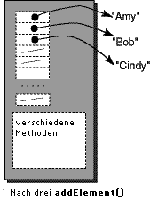

FRAGE 7:

meinVector.size() <= meinVector.capacity()
wird immer true sein.
Vector Elemente hinzufügen
Um ein Element am Ende eines Vector-Objekts hinzufügen, verwenden Sie:
addElement( Object ) ; // eine Referenz auf ein Object am Ende des Vector-Objekts
// hinzufügen, dabei erhöht sich seine Größe um eins.
// Die Kapazität des Vector-Objekts wird falls nötig,
// um die Inkrementgröße erhöht.
Hier ist ein Beispielprogramm.
Um die Klasse Vector verwenden zu können, müssen Sie das Paket java.util importieren:
|  |
import java.util.* ;
class VectorBsp
{
public static void main ( String[] args)
{
Vector namen = new Vector( 20, 5 );
System.out.println("Kapazität: "
+ namen.capacity() );
System.out.println("Groesse: "
+ namen.size() );
namen.addElement("Amy");
namen.addElement("Bob");
namen.addElement("Cindy");
System.out.println("Kapazität: "
+ namen.capacity() );
System.out.println("Groesse: "
+ namen.size() );
}
}
|
Die Anfangskapazität des Vector-Objekts wird auf 20 gesetzt, mit einer Inkrementgröße von 5.
Die Referenzen von drei Stringobjekten wurden hinzugefügt.
(Die Stringobjekte wurden dadurch konstruiert, dass Zeichen in doppelte Anführungszeichen eingeschlossen wurden.)
Wie die Abbildung zeigt, sind die hinzugefügten Objekte
kein Teil des Vector-Objekts.
Ein Vector enthält ein Array von Referenzen,
das auf die hinzugefügten Objekte verweist.